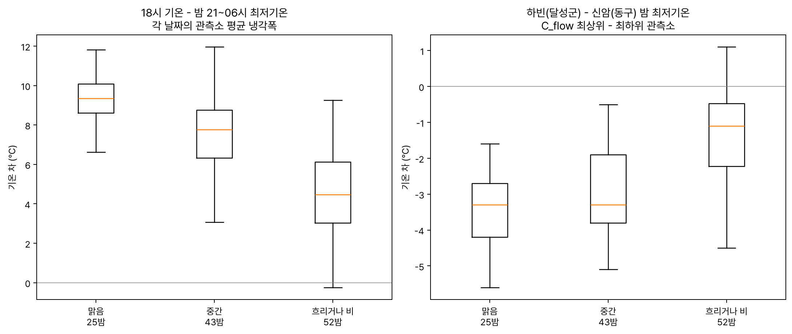
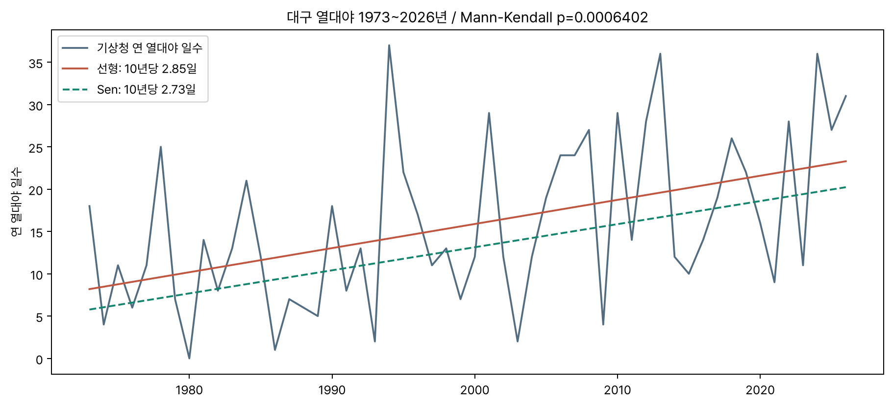

1
대구 열대야는 늘고 있다
대구는 팔공산, 비슬산, 앞산으로 둘러싸인 분지 지형이라 낮 동안 쌓인 열기가 밤에도 쉽게 빠져나가지 않습니다. 기상청 대구(ASOS 143) 관측소의 1973~2026년(54년) 기록에서 연간 열대야 일수는 초기 10년(1973~1982) 평균 10.4일에서 최근 10년(2017~2026) 평균 22.5일로 두 배 이상 늘었습니다. 단순 선형 추세는 10년당 +2.85일(p=0.000391)이고, 가산 시계열에 맞춘 비모수 Sen 기울기는 10년당 +2.73일(95% 신뢰구간 1.25~4.58일), Mann-Kendall 검정은 tau=0.320(z=3.414, p=0.00064)로 장기 증가 추세가 일관되게 확인됩니다(단, 연도 간 자기상관을 보정하지 않은 기본 추정입니다).
2026년 여름 열대야는 총 31일이었습니다. 기상청 열대야 목록 기준 밤 최저기온 평균은 26.35℃(최고 28.8℃)이고, 21시~다음 날 06시 정시 자료 기준 평균은 26.45℃, 일별 달력일(00~24시) 최저 평균은 26.00℃(목록과 3일만 일치)이므로 목적에 따라 시간 기준을 구분해 사용합니다.
일교차 대신 저녁 18시부터 밤 최저까지의 하강 폭으로 검증: 기본 분석에서 참고한 일교차(맑은 날 11.57℃ 대 흐리거나 비 온 날 7.39℃)에는 낮 동안 햇볕으로 최고기온이 오르는 영향이 크게 섞입니다. 보강 실험에서 일교차 대신 저녁 18시부터 밤 최저까지의 하강 폭으로 2026년 6~9월 완결 120밤(관측소 7곳 평균, 강수 빈칸 또는 0이고 일평균 운량 3 이하를 맑음으로 분류)을 다시 집계한 결과, 맑은 밤(25밤) 평균 9.41℃(중앙값 9.36℃), 중간 밤(43밤) 7.74℃, 흐리거나 비 온 밤(52밤) 4.63℃(중앙값 4.46℃)로 맑은 밤의 하강 폭이 두 배를 넘었습니다. 같은 기간 C_flow 최상위 하빈과 최하위 신암의 밤 최저기온 차이도 맑은 밤 평균 -3.44℃에서 흐리거나 비 온 밤 -1.38℃로 절반 이하로 줄었습니다.




![[시민용] 찬바람길 탐색 등급과 현장 확인 후보 구간 8곳 지도](assets/map_04_citizen_coolwind_walk_grades.png)


![[행정용] 찬 공기 유입 길목 막힘 위험 지수와 녹지 단절 검토 지점 (기본안: 건물 높이를 반영하지 않은 WorldCover 시가지 비율과 녹지 단절도 기반)](assets/map_05_admin_blockage_risk_hotspots.png)